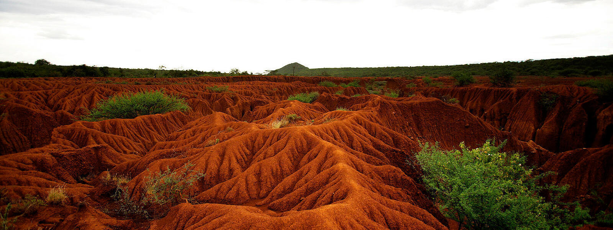

Soil Erosion Discovery
Jared Elliot noticed soil erosion for the first time in the contemporary world in 1685. He documented his views in a series of writings, and he was particularly worried with water rushing down barren hillslopes. He was among the first in his time to perform soil conservation studies. He planted green crops to firm up and nourish the soil, as well as grasses and legumes for animal management.
While the West continued to adopt bad soil practices, human settlements in the East, particularly China and India, recognized the need of soil preservation and implemented many modern conservation strategies such as terracing, crop rotation, and the use of natural fertilizers. Early British immigrants documented their initial views of these places' steep slopes lined with terraces for cultivation.
However, western influences, along with the necessity to feed an ever-increasing population, have compelled these countries to abandon their ancient ways in favor of the short-term rewards of contemporary techniques.